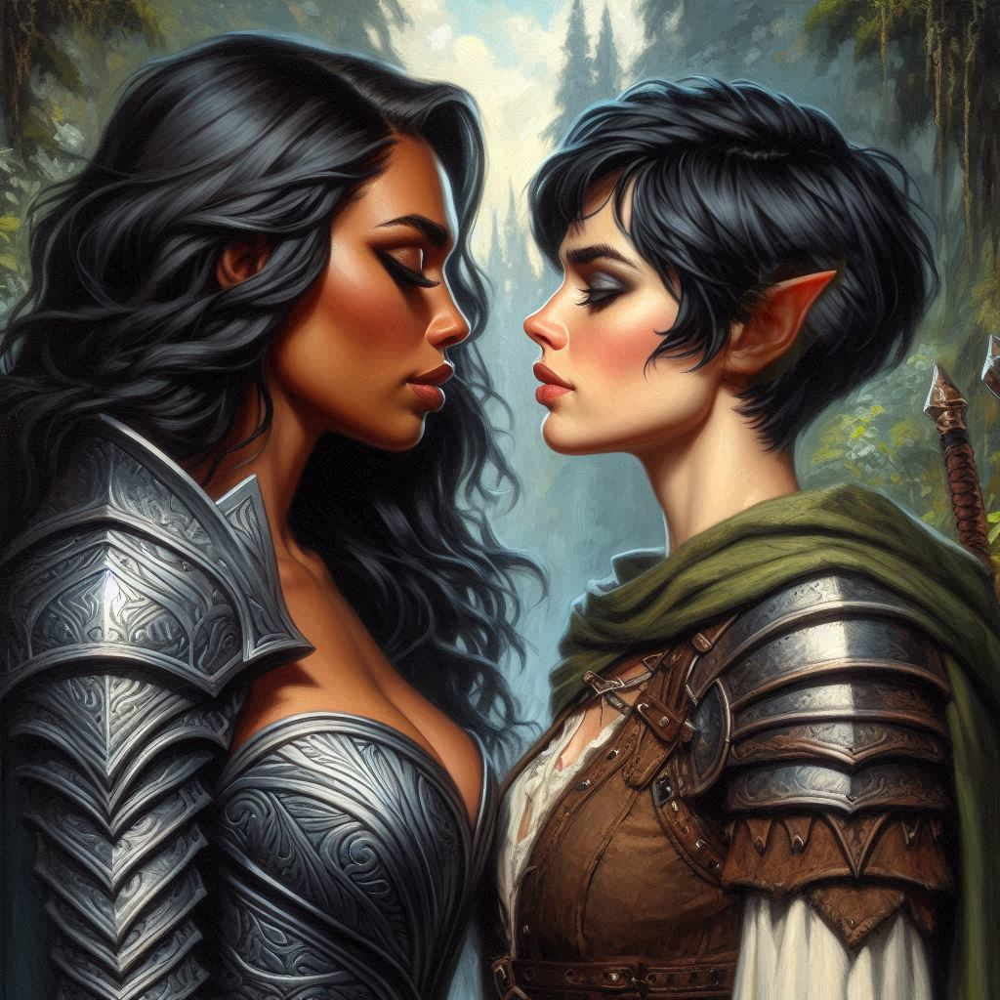

The Enemy Revealed

The air grows heavier as you approach Hemlock Falls. Each step takes you closer to the heart of the mystery, but the unease in your chest deepens. You glance over at Princess Hawthorn, her face set in a mask of determination. The two of you have formed a tentative alliance, but trust remains elusive. You know she has her own motives, just as you have yours.
The path winds between jagged rocks, and the sound of rushing water fills the air. Somewhere up ahead is Jorsh, the boy you once knew, now transformed into something darker. The thought stirs a mixture of emotions you can’t quite name—betrayal, anger, but also something that pulls at you, something deeper.
You shake your head, trying to focus. This mission was supposed to be simple: capture Jorsh, bring him back to face justice. But as the political landscape unfolds, the simplicity crumbles.
As if sensing your turmoil, Hawthorn breaks the silence. “You’re thinking about him, aren’t you? Jorsh.”
You tense, not expecting her to be so direct. “I’m thinking about the mission,” you reply, keeping your tone guarded.
She smiles faintly, but there’s something unreadable in her eyes. “You’re not the only one with ties to him. His father once traded with the kingdom. A good man, by all accounts. It’s a shame things turned out this way.”
You turn to face her. “What do you know about him?”
“More than I’ve let on,” she admits, her gaze turning toward the distant falls. “Jorsh has been spotted in the caves nearby. He’s after something—something that could tip the balance of power.”
Your heartbeat quickens. “The treasure?”

She nods. “But it’s more than that. He’s not the only one with plans for what lies beneath Hemlock Falls.”
You frown, your instincts flaring. “What do you mean?”
The Princess hesitates, but her eyes meet yours with a seriousness that sends a chill through you. “The Minister of Trade isn’t just after wealth. He’s been dabbling in forbidden magic, darker than anything Jorsh could summon on his own. He’s planning to open a portal to the realm of the dark elves.”
Your breath catches. Dark elves—beings of immense power and malice, long banished from these lands. The thought of them returning, under the command of the corrupt Minister of Trade, turns your blood cold.
“But why?” you ask, struggling to make sense of it all.
“I have reason to believe that the Minister of Trade is himself a dark elf,” Hawthorn explains, her voice dropping. “To the shame of my father and the whole royal family, he allowed a dark elf to infiltrate the Kingdom of Yew. If he summons the dark elves, he’ll use them to wipe out his enemies, including the Magistrate of Belladonna. Your mission, my quest—none of it matters if he succeeds.”
You stare at her, the weight of her words settling over you. The mission, once so straightforward, now feels impossibly complex. Capture Jorsh, bring him to justice? It seems laughable in the face of such dark forces.
“What about you?” you ask, your voice barely a whisper. “Why are you here?”
For the first time since you’ve met her, Hawthorn’s mask slips. Her expression softens, and she lets out a breath. “I’m not just here for the treasure. My family... we’re caught up in this mess. I need that gold to keep my kingdom intact, to keep the Minister from unraveling everything. If the truth comes out, my parents—”
She stops, shaking her head. Her vulnerability surprises you, and for a moment, the distance between you closes. You see the weight she carries, the same burden of responsibility that hangs over your shoulders.
Without thinking, you reach out and place a hand on her arm. “We’ll figure this out.”
Hawthorn looks at you, her eyes searching yours. The tension between you shifts, becoming something different, something unspoken. For the first time, you see not just a Princess or a rival, but a person—a woman fighting for survival, just like you.
She doesn’t pull away, and for a moment, the world narrows to just the two of you, standing together against the growing storm. You feel the warmth of her presence, the intensity in her gaze, and for the briefest second, you wonder what it would be like to let your guard down completely.
But you pull back, heart pounding, reminding yourself of the mission. “We need to focus. If the Minister’s behind this, Jorsh might not be the real enemy.”
Hawthorn nods, her expression hardening again, though something lingers between you. “We need to stop them both,” she says.

You turn your attention back to the path ahead. Jorsh’s betrayal feels sharper now, but there’s more at stake than you ever realized. Dark elves, political intrigue, and forbidden magic—this isn’t the simple quest you signed up for. After several hours of strenuous uphill travel, you find the entrance to Hemlock Caverns. You stop next to an overgrown monument, two statues of elvish warriors flanking a stone archway over the front of the cave. Hawthorn stops and looks up at the statues, a look of dread crossing her face.
“This place feels evil,” she remarks, pulling her cloak up around her neck. Her nervous glance over her shoulder causes you to feel jittery and look around.
You silently scold yourself for letting the princess’s paranoia get to you. There is a part of you that wonders about Elias. Would things be different if he were by your side? His steady presence, his loyalty. But you left him behind, and now your mind is tangled with thoughts of the Princess—her closeness, her secrets. The lines between ally, enemy, and something more are becoming dangerously blurred.
The roar of Hemlock Falls grows louder in your ears, and the air hums with magic. Jorsh is near, and with him, the answers you desperately seek. But even as you brace for the confrontation ahead, you can’t shake the feeling that your choices—about Jorsh, about Hawthorn, about Elias—are leading you toward a reckoning far greater than you ever imagined.
Hawthorn takes a deep breath and looks at you, as if seeking your guidance. “Well,” she says. “We should probably get going. Do you have torches in your pack?”
You worry that the Princess of Yew should not be taking part in an adventure of this gravitas. She seems to have lost her nerve. While she may have been trained in martial arts, she’s no warrior. Maybe you should convince her to stay outside the cave while you conduct a reconnaissance and make sure it's not a trap.